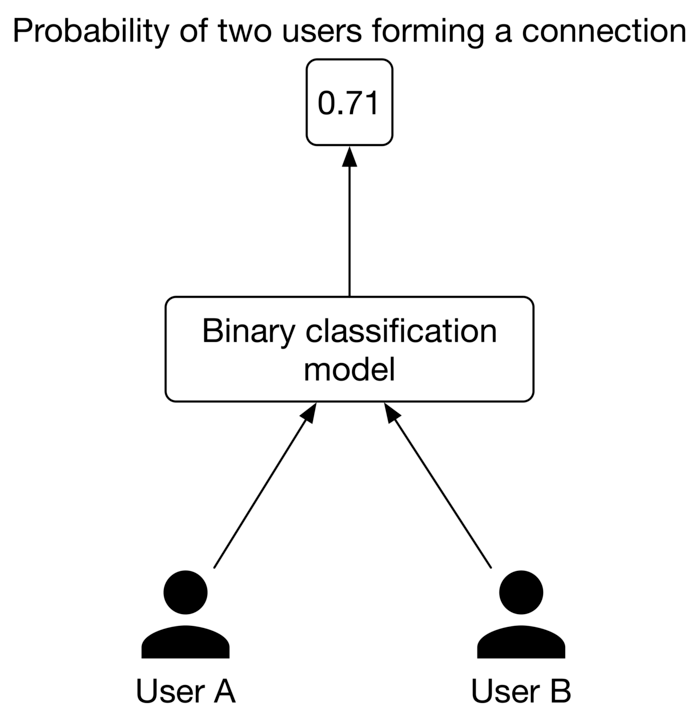
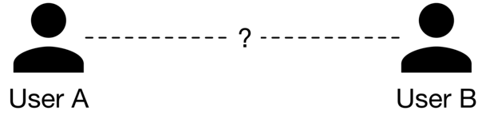
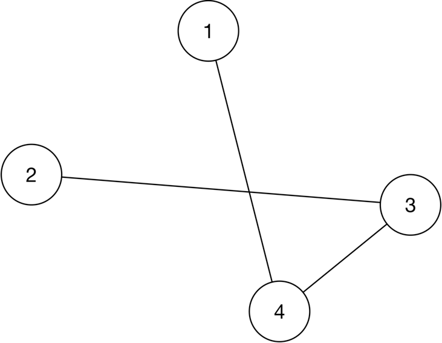
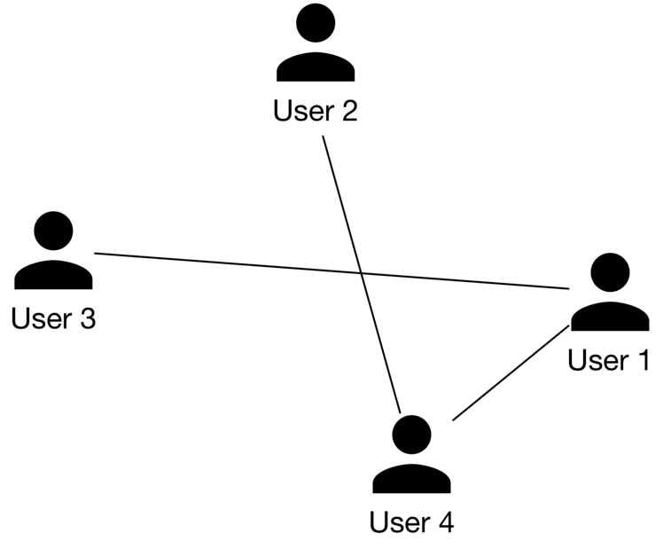
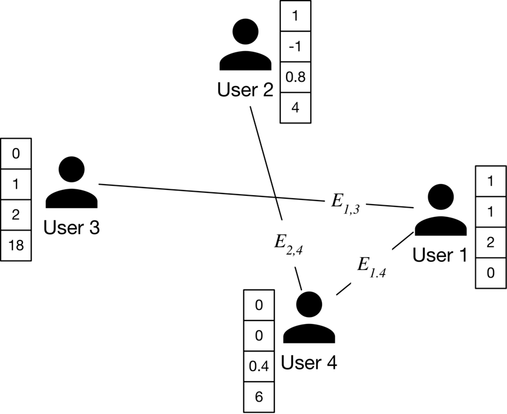

People You May Know
Introduction
People You May Know (PYMK) is a list of users with whom you may want to connect based on things you have in common, such as a mutual friend, school, or workplace. Many social networks, such as Facebook, LinkedIn, and Twitter, utilize ML to power PYMK functionality.
![Image represents a user interface mockup displaying a list of people a user might know. The overall layout is a rectangular container with the header text 'People you may know' at the top. Below the header are four identical rectangular cards arranged horizontally. Each card contains a circular profile picture icon representing a person, depicted as a simple black silhouette of a person within a circle. Underneath the profile picture, there are two rectangular placeholders, likely intended for additional information such as the person's name and a brief description or connection to the user. There are no explicit connections or information flow depicted between the cards; they are simply presented as a list of independent profiles. No URLs or specific parameters are visible.](images/ch11-people-you-may-know-img-3a1e725c.png)
In this chapter, we will design a PYMK feature similar to LinkedIn’s. The system takes a user as input and recommends a list of potential connections as output.
Clarifying Requirements
Here is a typical interaction between a candidate and an interviewer.
Candidate: Can I assume the motivation for building the PYMK feature is to help users discover potential connections and grow their network?
Interviewer: Yes, that’s a good assumption.
Candidate: To recommend potential connections, a huge list of factors must be considered, such as location, educational background, work experience, existing connections, previous activities, etc. Should I focus on the most important factors, such as educational background, work experience, and the user’s social context?
Interviewer: That sounds good.
Candidate: On LinkedIn, two people are friends if – and only if – each is a friend of the other. Is that correct?
Interviewer: Yes, friendship is symmetrical. When someone sends a connection request to another user, the recipient needs to accept the request for the connection to be made.
Candidate: What’s the total number of users on the platform? How many of them are daily active users?
Interviewer: We have nearly 1 billion users and 300 million daily active users.
Candidate: How many connections does an average user have?
Interviewer: 1,000 connections.
Candidate: The social graph of most users is not very dynamic, meaning their connections don’t change significantly over a short period. Can I make this assumption when designing PYMK?
Interviewer: That’s an excellent point. Yes, it’s a reasonable assumption.
Let's summarize the problem statement. We are asked to design a PYMK system similar to LinkedIn's. The system takes a user as input and recommends a ranked list of potential connections as output. The motivation for building the system is to enable users to discover new connections more easily and grow their networks. There are 1 billion total users on the platform, and a user has 1,000 connections on average.
Frame the problem as an ML task
Defining the ML objective
A common ML objective in PYMK systems is to maximize the number of formed connections between users. This helps users to grow their networks quickly.
Specifying the system’s input and output
The input to the PYMK system is a user, and the outputs are a list of connections ranked by relevance to the user. This is shown in Figure 11.2.
![Image represents a system architecture diagram illustrating data flow. A single user, represented by a black circle icon, is depicted on the left, sending data to a central component labeled 'PYMY,' represented as a rectangular box. From 'PYMY,' data flows to a group of four users, each represented by a black circle icon and labeled individually as 'User B,' 'User X,' 'User Z,' and 'User K.' These four users are grouped together within a dashed-line rectangle, suggesting they are a distinct unit or share a common characteristic. The arrows indicate the unidirectional flow of data from the initial user to 'PYMY' and then from 'PYMY' to the group of four users. No feedback loops or other connections are shown, implying a simple, one-way data transmission process.](images/ch11-people-you-may-know-img-cce9eadf.png)
Choosing the right ML category
Let's examine two approaches commonly used to build PYMK: pointwise Learning to Rank (LTR) and edge prediction.
Pointwise LTR
In this approach, we frame PYMK as a ranking problem and use a pointwise LTR to rank users. In pointwise LTR, as Figure 11.3 shows, we employ a binary classification model which takes two users as input and outputs the probability of the given pair forming a connection.

However, this approach has a major drawback; since the model's inputs are two distinct users, it doesn't consider the available social context. While this does simplify things, leaving out information about a user's connections might make predictions less accurate.
Let's analyze an example to understand how social context can provide very important insights. Imagine we want to predict whether or not ⟨ user A, user B ⟩ is a potential connection.

By looking at their one-hop neighborhood (connections of user A or user B), we gain more information to determine if ⟨ user A, user B⟩ is a potential connection. As shown in Figure 11.5, consider two different scenarios.
![Image represents two scenarios depicting relationships between six users (A, B, C, D, E, F). Scenario 1 shows a complex, interconnected network where Users A and B are connected to each other via a dashed line representing an unknown relationship. Users A and B are each connected to Users C, D, E, and F via solid lines, indicating a direct relationship. Additionally, Users C and F, and Users D and E are connected to each other, suggesting further relationships. Scenario 2 presents a simplified structure. Again, Users A and B are connected by a dashed line representing an unknown relationship. However, unlike Scenario 1, Users A and B are only connected to Users C, D, E, and F individually, forming two separate, independent triangles. Users C and D are connected, as are Users E and F, but there are no connections between the two triangles. Both scenarios are labeled 'Scenario 1' and 'Scenario 2' respectively, at the bottom.](images/ch11-people-you-may-know-img-8d18fbd5.png)
In scenario 1, user A and user B each have four mutual connections, and there are mutual connections between users C,D,E, and F.
In scenario 2, user A and user B each have two friends, and there's no connection between user A and user B's connections.
By looking at their one-hop neighborhood, you might expect that ⟨ user A, user B⟩ is more likely to form a connection in scenario 1 rather than in scenario 2. In practice, we can even leverage two-hop or three-hop neighborhoods to capture more useful information from the social context.
Before discussing the second approach, let's understand how graphs store structural data, such as the social context, and which machine learning tasks can be performed on graphs.
In general, a graph represents relations (edges) between a collection of entities (nodes). The entire social context can be represented by a graph, where each node represents a user, and an edge between two nodes indicates a formed connection between two users. Figure 11.6 shows a simple graph with four nodes and three edges.

There are three general types of prediction tasks that can be performed on structured data represented by graphs:
- Graph-level prediction. For example, given a chemical compound as a graph, we predict whether the chemical compound is an enzyme or not.
- Node-level prediction. For example, given a social network graph, we predict if a specific user (node) is a spammer.
- Edge-level prediction. Predict if an edge is present between two nodes. For example, given a social network graph, we predict if two users are likely to connect.
Let's look at the edge prediction approach for building the PYMK system.
Edge prediction
In this approach, we supplement the model with graph information. This enables the model to rely on the additional knowledge extracted from the social graph, to predict whether an edge exists between two nodes.
More formally, we use a model that takes the entire social graph as input, and predicts the probability of an edge existing between two specific nodes. To rank potential connections for user A, we compute the edge probabilities between user A and other users, and use these probabilities as the ranking criteria.
In addition to the typical features that the model utilizes, the model also relies on additional knowledge extracted from the social graph to predict whether an edge exists between two nodes.
![Image represents a diagram illustrating an edge prediction model in a social network. The diagram shows six users (A, B, C, D, E, F) represented as black icons. Solid lines connect some users, indicating existing relationships or edges. A dashed line connects User A and User B, suggesting a potential relationship being evaluated. These user relationships feed into an 'Edge prediction model' box, which processes the data and outputs a 'Probability of an edge between two users', shown as 0.71 in a separate box. The arrow from the users to the model indicates the input of user data, while the arrow from the model to the probability box shows the output of the model's prediction. The '?' above the dashed line between User A and User B indicates that the model is evaluating the probability of an edge between them.](images/ch11-people-you-may-know-img-192108bf.png)
Data Preparation
Data engineering
In this section, we discuss the raw data available:
- Users
- Connections
- Interactions
Users
In addition to users’ demographic data, we have information about their educational and work backgrounds, skills, etc. Table 11.1 shows an example of a user’s educational background data. There might be similar tables to store work experiences, skills, etc.
| User ID | School | Degree | Major | Start date | End date |
|---|---|---|---|---|---|
| 11 | Waterloo | M.Sc | Computer Science | August 2015 | May 2017 |
| 11 | Harvard | M.Sc | Physics | May 2004 | August 2006 |
| 11 | UCLA | Bachelors | Electrical Engineering | Sep 2022 | - |
Table 11.1: Users’ educational background data
One challenge with this type of raw data is that a specific attribute can be represented in different forms. For example, "computer science" and "CS" have the same meaning, but the text differs. So, it's important to standardize the raw data during the data engineering step so we don't treat different forms of a single attribute differently. There are various approaches to standardizing the raw data. For example:
- Force users to select attributes from a predefined list.
- Use heuristics to group different representations of an attribute.
- Use ML-based methods such as clustering [1] or language models to group similar attributes.
Connections
A simplified example of connection data is shown in Table 11.2. Each row represents a connection between two users and when the connection was formed.
| User ID 1 | User ID 2 | Timestamp when the connection was formed |
|---|---|---|
| 28 | 3 | 1658451341 |
| 7 | 39 | 1659281720 |
| 11 | 25 | 1659312942 |
Table 11.2: Connection data
Interactions
There are different types of interactions: a user sends a connection request, accepts a request, follows another user, searches for an entity, views a profile, likes or reacts to a post, etc. Note, in practice, we may store interaction data in different databases, but for simplicity, here, we include everything in a single table.
| User ID | Interaction type | Interaction value | Timestamp |
|---|---|---|---|
| 11 | Connection request | user_id_8 | 1658450539 |
| 8 | Accepted connection | user_id_11 | 1658451341 |
| 11 | Comment | [user_id_4, Very insightful] | 1658451365 |
| 4 | Search | "Scott Belsky" | 1658435948 |
| 11 | Profile view | user_id_21 | 1658451849 |
Table 11.3: Interaction data
Feature engineering
To determine potential connections for a user (e.g., user A), the model needs to utilize user A's information, such as age, gender, etc. In addition, the affinities between user A and other users are useful. In this section, we discuss some of the most important features.
User features
Demographics: age, gender, city, country, etc.
Demographic data helps determine if two users are likely to form a connection. Users tend to connect with others who have similar demographics.
It's common to have missing values in demographic data. To learn more about how to handle missing values, refer to the "Introduction and Overview" chapter.
The numbers of connections, followers, following, and pending requests
This information is important as users are more likely to connect with someone with lots of followers or connections, compared to a user with few connections.
Account’s age
Accounts created very recently are less reliable than those that have existed for longer. For example, if an account was created yesterday, it's more likely to be a spam account. So, it may not be a good idea to recommend it to users.
The number of received reactions
These are numerical values representing the total number of reactions received, such as likes, shares, and comments over a certain period, like one week. Users tend to connect with more active users on the platform, who receive more interactions from other users.
User-user affinities
The affinity between two users is a good signal to predict if they will connect. Let’s look at some important features which capture user-user affinities.
Education and work affinity
- Schools in common: Users tend to connect with others who attended the same school.
- Contemporaries at school: Overlapping years at school increases the likelihood of two users connecting. For example, users might want to connect with someone who attended school X the same time they did.
- Same major: A binary feature representing whether two users had the same major in school.
- Number of companies in common: Users may connect with people who have worked at the same companies.
- Same industry: A binary feature representing whether the two users work in the same industry.
Social affinity
- Profile visits: The number of times a user looks at the profile of another user.
- Number of connections in common, aka mutual connections: If two users have many common connections, they are more likely to connect. This feature is one of the most important predictive features [2].
- Time discounted mutual connections: This feature weighs mutual connections by how long they have existed. Let's go through an example to understand the reasoning behind this feature.
Imagine we want to determine whether user B is a potential connection for user A. Consider two scenarios: in scenario 1, user A's connections were formed very recently, whereas in scenario 2, the connections were formed a long time ago. This is shown in Figure 11.8.
![Image represents two scenarios illustrating a network of users (represented by solid black circles) and the time elapsed (in days, indicated by numbers on the connecting lines) between their interactions. Each scenario shows three users connected to two central users labeled 'User A' and 'User B'. Lines connect the users, with the number of days between their interactions written along the lines. Scenario 1 shows connections with shorter time spans (3, 6, and 18 days), while Scenario 2 depicts connections with significantly longer time spans (311, 256, and 839 days). A dashed arrow connects User A to User B in both scenarios, labeled with a question mark, suggesting an unknown or to-be-determined relationship or time elapsed between these two users. The scenarios are presented side-by-side, labeled 'Scenario 1' and 'Scenario 2' respectively, allowing for a comparison of interaction patterns based on the time differences.](images/ch11-people-you-may-know-img-6040891b.png)
In scenario 1, user A's network has grown recently, meaning it's more likely user A will connect with user B. Meanwhile, in scenario 2, the chances are that user A is aware of user B but has decided not to connect.
Model Development
Model selection
Earlier, we formulated the PYMK problem as an edge prediction task, where a model takes the social graph as input and predicts the probability of an edge existing between two users. To handle the edge prediction task, we choose a model that can process graph inputs. Graph neural networks (GNNs) are designed to operate on graph data. Let's take a closer look.
GNNs
GNNs are neural networks that can be directly applied to graphs. They provide an easy way to perform graph-level, node-level, and edge-level prediction tasks.
As shown in Figure 11.9, GNN takes a graph as input. This input graph contains attributes associated with nodes and edges. For example, the nodes can store information such as age, gender, etc., while the edges can store user-user characteristics, such as the number of common schools and workplaces, connection age, etc. Given the input graph and associated attributes, the GNN produces node embeddings for each node.
![Image represents a graph neural network (GNN) model's input and output. The left side shows an input graph with four nodes (labeled 1, 2, 3, and 4) connected by edges. Node 1 is connected to node 4, node 2 is connected to node 3, and node 3 is connected to node 4. This graph is fed into a 'GNN model' (represented by a box). The output of the GNN model, shown on the right, is the same graph structure but with each node now associated with a vector of numerical values. Specifically, node 1 has an associated vector [0, -1, 0.8, -0.1], node 2 has [0.5, 0.8, 0.1, -0.1], node 3 has [-0.7, 0, 1, -1], and node 4 has [-0.2, -1, 0.6, -0.3]. These vectors represent the node embeddings or features generated by the GNN model after processing the input graph's structure and potentially initial node features (not explicitly shown in the input graph). The arrows indicate the flow of information from the input graph through the GNN model to the output graph with its updated node representations.](images/ch11-people-you-may-know-img-d0cba5d4.png)
Once the node embeddings are produced, they are used to predict how likely two nodes will form a connection using a similarity measure, such as dot product. For example, as shown in Figure 11.10, we compute the dot product between the embeddings of node 2 and node 4 to predict whether there is an edge between them.
![Image represents a directed acyclic graph illustrating a computation. Four nodes (labeled 1, 2, 3, and 4) represent vectors, each depicted alongside a column vector showing its components. Node 1's vector is [0, -1, 0.8, -0.1]; node 2's is [0.5, 0.8, 0.1, -0.1]; node 3's is [-0.7, 0, 1, -1]; and node 4's is [-0.2, -1, 0.6, -0.3]. Directed edges connect the nodes, indicating data flow. Node 2 connects to node 3, and node 1 connects to node 4. Node 3 and node 1 also connect to node 4. A dashed line connects node 2 to node 4, labeled '?'. A directed edge labeled 'dot product' points from node 2 and node 4 to node 4, implying that the dot product of the vectors represented by nodes 2 and 4 is computed and results in the vector associated with node 4. The diagram likely visualizes a part of a neural network or a similar computational structure where node 4's vector is a result of weighted sums of the vectors from nodes 1, 2, and 3. The '?' suggests an unknown or unspecified operation or connection between nodes 2 and 4.](images/ch11-people-you-may-know-img-61f9a351.png)
Many GNN-based architectures, such as GCN [3], GraphSAGE [4], GAT [5], and GIT [6], have been developed in recent years. These variants have different architectures and different levels of complexity. To determine which architecture works best, extensive experimentation is required. To gain a deeper understanding of GNN-based architectures, refer to [7]
Model training
To train a GNN model, we provide the model with a snapshot of the social graph at time t. The model predicts the connections which will form at time t+1. Let's examine how to construct the training data.
Constructing the dataset
To construct the dataset, we do the following:
- Create a snapshot of the graph at time t
- Compute initial node features and edge features of the graph
- Create labels
1. Create a snapshot of the graph at time t. The first step in constructing training data is to create input for the model. Since a GNN model expects a social graph as input, we create a snapshot of the social graph at time t using the available raw data. Figure 11.11 shows an example of the graph at time t.

2. Compute initial node features and edge features of the graph. As shown in Figure 11.12, we extract the user's features, such as age, gender, account age, number of connections, etc. These are used as the nodes' initial feature vectors.
![Image represents a graph depicting four users (User 1, User 2, User 3, and User 4) represented by black circles, each connected by lines indicating relationships. Adjacent to each user is a column vector of numerical values. User 3 has a vector [0, 1, 2, 18]; User 2 has [1, -1, 0.8, 4]; User 4 has [0, 0, 0.4, 6]; and User 1 has [1, 1, 2, 0]. Lines connect users, suggesting interactions or relationships. Specifically, User 3 is connected to User 1, User 2 is connected to User 4, and User 1 is connected to User 4. The numerical vectors likely represent features or attributes associated with each user, potentially used in a machine learning context to model user behavior or relationships. The graph structure visualizes a network of users and their associated data.](images/ch11-people-you-may-know-img-aff5f2b7.png)
Similarly, we extract user-user affinity features and employ them as the initial feature vectors of the edges. As shown in Figure 11.13, there is an edge between user 2 and user 4. E2,4 represents the initial feature vector which captures information such as the number of mutual connections, profile visits, overlapping time at schools in common, etc.

i,j`, where `i` and `j` represent the user indices (e.g., `E1,3` represents the relationship between User 1 and User 3). The graph shows User 3 connected to User 1, User 2 connected to User 1 and User 4, and User 4 connected to User 1 and User 2. The arrangement suggests a network or interaction model where the vectors might represent features or attributes of each user, and the connections represent relationships with associated weights or strengths implied by the `Ei,j` labels."/>3. Create labels
In this step, we create labels that the model is expected to predict. We use the graph snapshot at time t+1 to determine positive or negative labels. Let's take a look at a concrete example.
![Image represents a dynamic social graph evolving over time. The image is divided into two parts, separated by a right-pointing arrow indicating a time step. The left part, labeled 'A snapshot of the social graph at time *t*', shows four users (User 1, User 2, User 3, and User 4) represented as black circles, with solid lines connecting them to depict relationships. Specifically, User 1 connects to User 3 and User 4; User 2 connects to User 1 and User 4; and User 3 connects to User 1. The right part, labeled 'A snapshot of the social graph at time *t+1*', shows the same four users, but with altered connections. The connections between User 1 and User 4, and User 2 and User 1 remain. However, the connection between User 3 and User 1 is replaced by a dashed line labeled '*t+1*', suggesting a weaker or potential connection. Additionally, User 3 now connects to User 4 with a solid line, indicating a new relationship formed between time *t* and *t+1*. The overall image illustrates how the social graph changes over time, with new relationships forming and potentially existing ones weakening or disappearing.](images/ch11-people-you-may-know-img-46eb5515.png)
As shown in Figure 11.14, positive and negative labels are created depending on whether a new edge forms at t+1. In particular, we label a pair of nodes as positive when they connect at t+1. Otherwise, they are labeled as negative.
![Image represents a graph depicting relationships between four users (User 1, User 2, User 3, and User 4), represented as nodes, connected by edges. Solid lines indicate direct relationships, while a dashed line from User 3 to User 4 is labeled 't+1', suggesting a delayed or indirect connection. This graph is then transformed into a table. The table lists pairs of users (node pairs or edges) from the graph, presented as ordered pairs within parentheses, e.g., (User 3, User 4). Each user pair is assigned a label, either 'Positive' or 'Negative,' indicating the nature of their relationship. The transformation from the graph to the table suggests a process of extracting and labeling relationships between users, likely for use in a machine learning model that predicts the type of relationship (positive or negative) between any given pair of users.](images/ch11-people-you-may-know-img-b25986bb.png)
Choosing the loss function
Once the input graph and labels are created, we are ready to train the GNN model. A detailed explanation of how GNN training works and which loss functions to employ is beyond the scope of this book. To learn more about these, see [7].
Evaluation
Offline metrics
During the offline evaluation, we evaluate the performance of the GNN model and the PYMK system.
GNN model
Since the GNN model predicts the presence of edges, we can think of it as a binary classification model. ROC-AUC metric is used to measure the performance of the model.
PYMK system
We extensively discuss choosing the right offline metrics for ranking and recommendation systems in previous chapters, so don't go into detail here. In our system, a user will either connect with a recommended connection or discard it. Due to this binary nature (connect or not), mAP is a good choice.
Online metrics
In practice, companies track lots of online metrics to measure the impact of PYMK systems. Let's explore two of the most important metrics:
- The total number of connection requests sent in the last X days
- The total number of connection requests accepted in the last X days
The total number of connection requests sent in the last X days. This metric helps us understand if the model increases or decreases the number of connection requests. For example, if a model leads to a 5% increase in the total number of sent connection requests, we can assume the model has a positive impact on the business objective.
However, this metric has a major drawback. A new connection forms between two users only when the recipient accepts a request to connect. For example, a user may send 1,000 connection requests, but recipients accept only a small percentage. This metric might not correctly reflect the actual growth of the users' network. Now, let's address this drawback with the next metric.
The total number of connection requests accepted in the last X days. As a new connection forms only when the recipient accepts the sender's request, this metric accurately reflects the real growth of the users' network.
Serving
At serving time, the PYMK system efficiently recommends a list of potential connections to a given user. In this section, we explain why speed optimization is needed and introduce some techniques to make PYMK efficient. Then, we propose a design in which different components work together to serve requests.
Efficiency
As discussed in the requirement gathering section, the total number of users on the platform is 1 billion, which indicates we need to sort through 1 billion embeddings to find potential connections for a single user. To make things even more challenging, the algorithm needs to be run for each user. Unsurprisingly, this is impractical at our scale. To mitigate the issue, two common techniques are used: 1) utilizing friends of friends (FoF) and 2) pre-compute PYMK.
Utilizing FoF
![Image represents a three-level hierarchical network structure depicting social connections. At the top level, a single large, filled-in circle representing a person is connected to four smaller, filled-in circles at the second level, labeled 'Friends.' Each of these four 'Friends' is then connected to multiple smaller, filled-in circles at the bottom level, labeled 'Friends of friends.' The connections are represented by lines emanating from each person to their respective connections in the level below. The number of connections varies; one 'Friend' has three connections at the bottom level, another has four, and the remaining two have three and two connections respectively. The dashed lines create rectangular boxes around the second and third levels, visually grouping the 'Friends' and 'Friends of friends' respectively. The overall structure resembles a tree, with the top-level person as the root and the bottom-level people as the leaves.](images/ch11-people-you-may-know-img-9bf5c211.png)
According to a Meta study [2], 92% of new friendships are formed via FoF. This technique uses a user's FoF to narrow down the search space.
As previously mentioned, a user has 1,000 friends on average. That means a user has 1 million (1000×1000) FoF, on average. This reduces the search space from 1 billion to 1 million.
Pre-compute PYMK
Let’s take a step back and consider adopting online or batch predictions.
Online prediction In PYMK, online prediction refers to generating potential connections in real-time when a user loads the homepage. In this approach, we don't generate recommendations for inactive users. Since recommendations are calculated "on the fly", if computing the recommendations takes a long time, it creates a poor user experience.
![Image represents a simplified architecture diagram of a machine learning system. A smartphone is depicted on the left, representing a client application. This smartphone initiates a 'Request' (labeled '1') to a 'PYMK service' (a rectangular box). The request flows from the smartphone to the service via a curved arrow. The PYMK service then sends a request (labeled '2') to a 'Model' (represented by a cloud symbol), which presumably resides in a separate cloud-based environment. After processing the request, the Model sends a response back to the PYMK service. Finally, the PYMK service sends a 'Response' (labeled '3') back to the smartphone via another curved arrow, completing the request-response cycle. The numbers 1, 2, and 3 indicate the sequential flow of information within the system.](images/ch11-people-you-may-know-img-d1d14297.png)
Batch prediction Batch prediction means the system pre-computes potential connections for all users and stores them in a database. When a user loads the homepage, we fetch pre-computed recommendations directly, so from the end user's standpoint, the recommendation is instantaneous. The downside of batch prediction is that we may end up with unnecessary computations. Imagine 20% of users log in daily. If we generate recommendations for every user daily, then the computing power used to generate 80% of recommendations will be wasted.
![Image represents a system architecture diagram illustrating a machine learning prediction pipeline. A smartphone on the left initiates the process by sending a 'Request' (labeled 3) to a database depicted as a cylinder. This database stores 'Pre-computed PYMK' data. The request flows to the database, which then sends 'Predictions' (labeled 2) to a 'PYMK service' component. The PYMK service receives the predictions and is fed by a 'Model' (represented by a cloud shape on the far right), indicated by an arrow labeled 1. Finally, the PYMK service sends a 'Response' (labeled 4) back to the smartphone, completing the prediction cycle. The numbers 1, 2, 3, and 4 likely represent sequential steps in the process. The acronym 'PYMK' is used consistently throughout the diagram, suggesting it represents a specific model or data type.](images/ch11-people-you-may-know-img-a508e0ba.png)
Which option do we choose: online or batch? We recommend batch prediction for two reasons. First, based on the requirements gathered, there are 300 million daily active users. Computing PYMK for all 300 million users on the fly may be too slow for a quality user experience.
Second, as the social graph in PYMK does not evolve quickly, the pre-computed recommendations remain relevant for an extended period. For example, we can keep PYMK recommendations for seven days and then re-compute them. The time window can be shortened (for instance, by one day) for newer users because their networks tend to grow faster.
In a social network, a user may not want to see the same set of recommended connections repeatedly. To support this, we can pre-compute more connections than needed and only display those a user hasn't seen before.
ML system design
Figure 11.19 shows the PYMK ML system design. The design comprises two pipelines:
- PYMK generation pipeline
- Prediction pipeline
Let's inspect each.
![Image represents a system architecture diagram for a machine learning pipeline. The diagram is divided into two main sections: a 'Prediction pipeline' and a 'PYMK generation pipeline'. The top section, the 'Prediction pipeline,' shows a user interacting with a 'PYMK service,' which in turn retrieves data from a 'Pre-computed PYMK' database. The bottom section, the 'PYMK generation pipeline,' details the process of creating this pre-computed data. This pipeline starts with a 'FoF Service' that feeds data into a 'Scoring service.' The 'Scoring service' utilizes a 'GNN Model' and receives input from the 'FoF Service'. The 'Scoring service' then passes its output to a 'Feature computation' component, which in turn accesses data from a 'Data lake.' Finally, the output of the 'Feature computation' is used to update the 'Pre-computed PYMK' database, creating a feedback loop. The dashed lines delineate the boundaries of the two pipelines, indicating their distinct but interconnected functionalities. Arrows show the direction of data flow between components.](images/ch11-people-you-may-know-img-3bf3fe3b.png)
PYMK generation pipeline
This pipeline is responsible for generating PYMK for all users and storing the results in a database. Let's take a closer look at this pipeline.
First, for a specific user, the FoF service narrows down the connections into a subset of candidate connections (2-hop neighbors). This is shown in Figure 11.20.
![Image represents a simplified architecture diagram of a 'FoF Service' (likely short for 'Friend of a Friend' service). A single user, labeled 'User 3,' is depicted on the left, sending data or a request (represented by a directed arrow) to a rectangular box labeled 'FoF Service' in the center. This service then processes the input and sends output (another directed arrow) to a group of users on the right, indicated by a dashed-line box containing multiple user icons labeled 'User 1,' 'User 8,' and 'User 23,' with an ellipsis (...) suggesting more users beyond those explicitly shown. The arrangement illustrates a one-to-many relationship where a single user's input through the FoF Service results in data or information being distributed to a larger set of users. No specific data or parameters are shown within the arrows or the service box itself.](images/ch11-people-you-may-know-img-b9b03eb7.png)
Next, the scoring service takes the candidate connections produced by the FoF service, scores each of them using the GNN model, then generates a ranked list of PYMK for the user. The PYMK is stored in a database. When a user request is made, we can simply pull their individual PYMK list directly from the database. This flow is shown in Figure 11.21.
![Image represents a machine learning system for recommending connections between users. An 'Input user' is provided as input to the system. This input, along with a set of 'Candidate connections' (represented by multiple user icons labeled 'User 1', 'User 8', 'User 23', etc.), feeds into a 'Scoring service'. The 'Scoring service' utilizes a 'GNN Model' to process 'Candidate connections' embeddings (vector representations of user connections) obtained from a database labeled 'Pre-computed PYMK'. A 'Feature computation' block likely preprocesses data before feeding it to the 'Scoring service'. The 'Scoring service' outputs connection scores, which are then used to rank the 'Candidate connections' based on their predicted scores (e.g., User 23 with a score of 0.8, User 1 with 0.3, etc.), presenting a sorted list of recommended connections to the input user. The dashed lines indicate data flow, while solid lines represent direct connections between components.](images/ch11-people-you-may-know-img-3781cf08.png)
Prediction pipeline
When a request arrives, the PYMK service first looks at the pre-computed PYMKs to see if recommendations exist. If they do, recommendations are fetched directly. If not, it sends a one-time request to the PYMK generation pipeline.
Note that what we have proposed is a simplified system. If you asked during an interview to optimize it, here are a few potential talking points:
- Pre-computing PYMK only for active users.
- Using a lightweight ranker to reduce the number of generated candidates into a smaller set before the scoring service assigns them a score.
- Using a re-ranking service to add diversity to the final PYMK list.
Other Talking Points
If there's time left at the end of the interview, here are some additional talking points:
- Personalized random walk [8] is another method often used to make recommendations. Since it's efficient, it is a helpful way to establish a baseline.
- Bias issue. Frequent users tend to have greater representation in the training data than occasional users. The model can become biased towards some groups and against others due to uneven representation in the training data. For example, in the PYMK list, frequent users might be recommended to other users at a higher rate. Subsequently, these users can make even more connections, making them even more represented in the training data [9].
- When a user ignores recommended connections repeatedly, the question arises of how to take them into account in future re-ranks. Ideally, ignored recommendations should have a lower ranking [9].
- A user may not send a connection request immediately when we recommend it to them. It may take a few days or weeks. So, when should we label a recommended connection as negative? In general, how would we deal with delayed feedback in recommendation systems [10]?
References
- Clustering in ML. https://developers.google.com/machine-learning/clustering/overview.
- PYMK on Facebook. https://youtu.be/Xpx5RYNTQvg?t=1823.
- Graph convolutional neural networks. http://tkipf.github.io/graph-convolutional-networks/.
- GraphSage paper. https://cs.stanford.edu/people/jure/pubs/graphsage-nips17.pdf.
- Graph attention networks. https://arxiv.org/pdf/1710.10903.pdf.
- Graph isomorphism network. https://arxiv.org/pdf/1810.00826.pdf.
- Graph neural networks. https://distill.pub/2021/gnn-intro/.
- Personalized random walk. https://www.youtube.com/watch?v=HbzQzUaJ_9I.
- LinkedIn’s PYMK system. https://engineering.linkedin.com/blog/2021/optimizing-pymk-for-equity-in-network-creation.
- Addressing delayed feedback. https://arxiv.org/pdf/1907.06558.pdf.